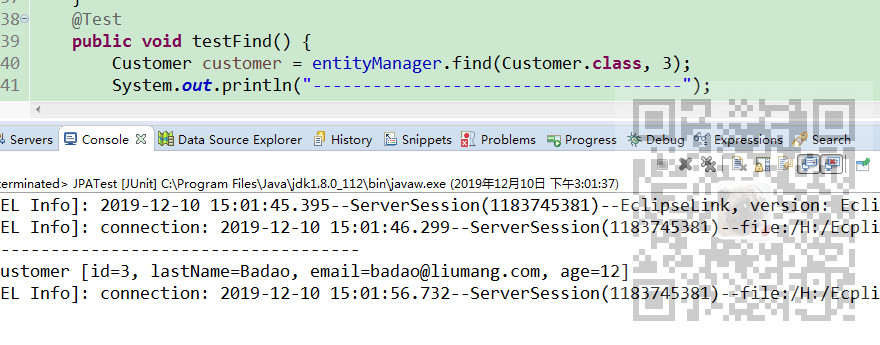
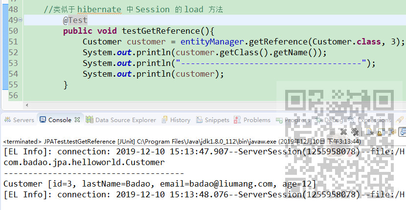

原文出处:本文由博客园博主霸道流氓提供。
原文连接:https://www.cnblogs.com/badaoliumangqizhi/p/12017384.html
原文连接:https://www.cnblogs.com/badaoliumangqizhi/p/12017384.html
场景
JPA入门简介与搭建HelloWorld(附代码下载)：
https://blog.csdn.net/BADAO_LIUMANG_QIZHI/article/details/103473937
在上面博客中搭建好JPA的HelloWorld后，再新建test包，包下新建Junit测试类
然后将JPA所需的API对象等声明
private EntityManagerFactory entityManagerFactory;
private EntityManager entityManager;
private EntityTransaction transaction;
然后编写每个测试方法执行前与执行后的方法
@BeforeEach
public void init(){
entityManagerFactory = Persistence.createEntityManagerFactory("HelloJPA");
entityManager = entityManagerFactory.createEntityManager();
transaction = entityManager.getTransaction();
transaction.begin();
}
@AfterEach
public void destroy(){
transaction.commit();
entityManager.close();
entityManagerFactory.close();
}
注：
博客主页：
https://blog.csdn.net/badao_liumang_qizhi
关注公众号
霸道的程序猿
获取编程相关电子书、教程推送与免费下载。
实现
测试find方法
@Test
public void testFind() {
Customer customer = entityManager.find(Customer.class, 3);
System.out.println("-------------------------------------");
System.out.println(customer);
}
上面方法通过主键ID为3查询到实体对象
类似于 hibernate 中 Session 的 get 方法。

测试getReference方法
@Test
public void testGetReference(){
Customer customer = entityManager.getReference(Customer.class, 3);
System.out.println(customer.getClass().getName());
System.out.println("-------------------------------------");
System.out.println(customer);
}
同上也是查询到主键Id为3的实体对象。
类似于 hibernate 中 Session 的 load 方法。
测试persist方法
@Test
public void testPersistence(){
Customer customer = new Customer();
customer.setAge(15);
customer.setEmail("BADAO@163.com");
customer.setLastName("LIUMANG");
entityManager.persist(customer);
}
上面方法将构建的对象存入数据库。
类似于 hibernate 的 save 方法. 使对象由临时状态变为持久化状态。
和 hibernate 的 save 方法的不同之处: 若对象有 id, 则不能执行 insert 操作, 而会抛出异常.。
测试remove方法
@Test
public void testRemove(){
Customer customer = entityManager.find(Customer.class, 4);
entityManager.remove(customer);
}
类似于 hibernate 中 Session 的 delete 方法. 把对象对应的记录从数据库中移除。
但注意: 该方法只能移除 持久化 对象. 而 hibernate 的 delete 方法实际上还可以移除 游离对象。